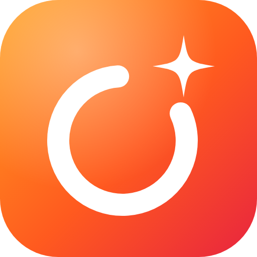

Hábitos, treino, leitura, fé e escrita. Um dia de cada vez.
O anel quase fechado é o dia sendo cumprido; a faísca é a conquista que vem com a constância.
Versão no escuro
Interface, números e títulos. Apertada e direta, como o sistema da Apple.